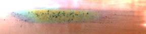

Operating Documentation
Direction 5193574-800, Rev# 22
LightSpeed 7.X Service Methods
Module Version 4.0, Version Date 6/3/10
Operating Documentation |
| Last revised: | 3 June 2010 |
Image Artifacts have been generated and reported on some CT systems due to the contamination of the bowtie and the primary copper filter. This contamination is from the lubricating grease used on the filter positioning drive screw assembly.
The inspection takes less than 5 minutes. It consists of simply examining the Copper primary filter.
Bright Flashlight
Remove Mylar Scan Window
Launch Diagnostic Data Collection, DDC, from the Service Desktop.
Select [DIAGNOSTICS].
Select [DIAGNOSTIC DATA COLLECTION].
Select [POSITION TUBE].
Enter 180 and execute.
Select [STATIC X-RAY OFF].
Filter[AIR].
Slice Collimation Largest Aperture, 64 x 0.625 for example.
Select [ACCEPT RX].
Remove the gantry right side cover.
Disable axial drive from the service switch panel.
Using a flashlight, inspect the primary copper filter by looking down into the collimator output port. See Illustration 1.
| NOTE: | The copper filter should be clean, dent and scratch free. Discoloration is acceptable. |
If contamination is visible (see Illustration 1), clean the collimator by following the Collimator Cleaning Procedure.
Enable axial drive from the service switch panel.
Reattach the gantry right side cover.
Illustration 1: Collimator Output Port

Illustration 2: Extremely Contaminated Copper Filter

| NOTE: | Allow DAS and Detector to warm up for 1 hour. |
Perform Collimator Calibration.
Perform Detailed Calibration
Perform Fast Calibration.
Perform System Scanning Test (Scout, Axial, Helical).
Perform Quality Assurance Test (Analyze Axial Scan).
Perform Save System State.
Image Quality Testing may fail for one or more of the following reasons:
Tube Alignments were performed with contamination present.
Check and adjust tube alignments as necessary.
Perform Detailed Calibration.
Detailed Calibration was performed with contamination present.
If the contamination occurred after the most recent saved system state, then reload calibrations from System State and perform FastCal, otherwise perform Detailed Calibration followed by FastCal.
Beam Obstruction may be present on Tube Output Port or chamber between Tube and Copper Filter.
Remove Tube and Inspect this area for beam obstructions. Clean or replace parts as needed.
Component failure within the Image Chain in addition to the collimator contamination.
Troubleshoot accordingly.